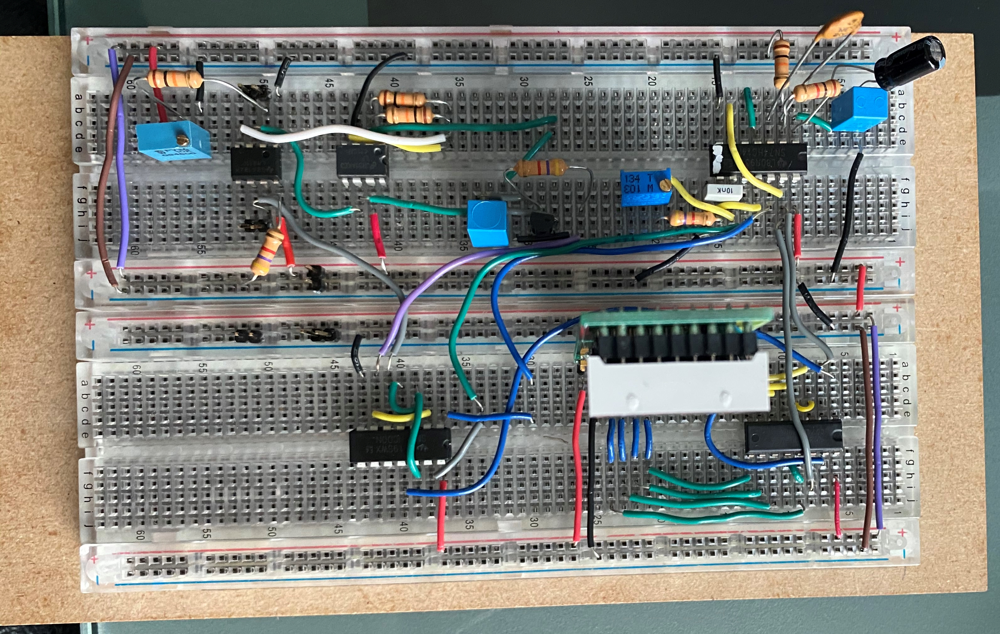
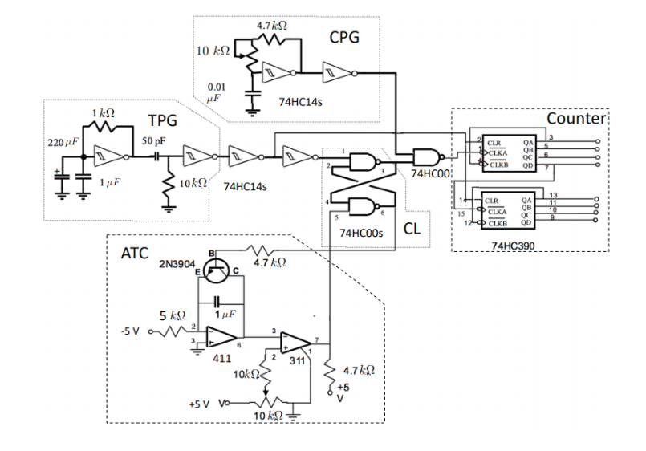

Analog-to-Digital Convertor
This was a final class project where we had to build an ADC convertor which converted an analog signal to a discrete signal. This project comprised of integrators, comparators, schmitt triggers, logic gates, and A LOT of debugging!
Overview
Most signals in nature (voices, power levels, etc.) are analog in nature. It is very important to read/load data from these signals however we need to convert these to digital first. This can be achieved using an Analog-to-Digital Convertor.
The general steps in achieving this conversion are as follows
- On reciept of an appropriate trigger pulse, a second stop pulse is generated at time t, where t represents the span of time lapsed between the trigger pulse and the second stop pulse. This t is proportional to the voltage being digitized.
- By gating a free running clock pulse train with this trigger pulse (whose time period is equal to t) and counting the number of clock pulses this ADC is obtained.
Below is the circuit diagram (taken from class notes) of the final integrated circuit:
If you wanted to learn more about the individual components and the final outcome, a link to my detailed lab report is included below.
Full Lab Report